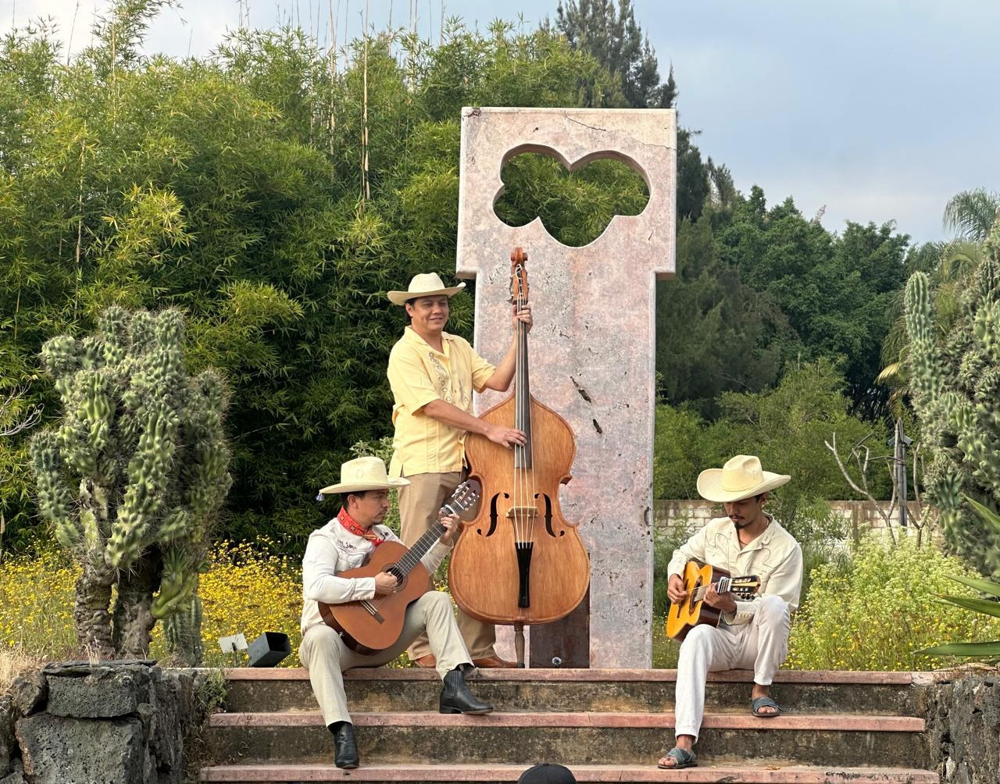
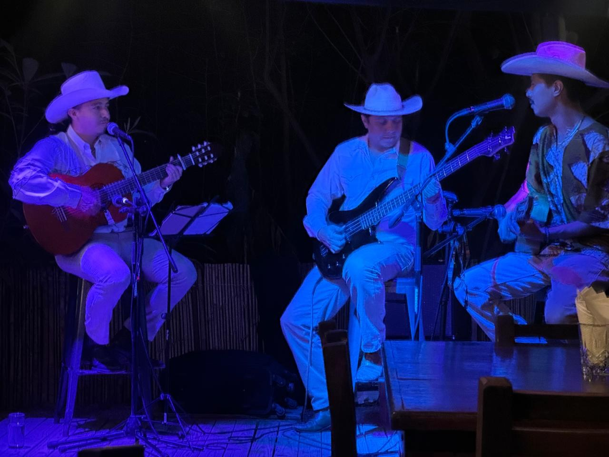
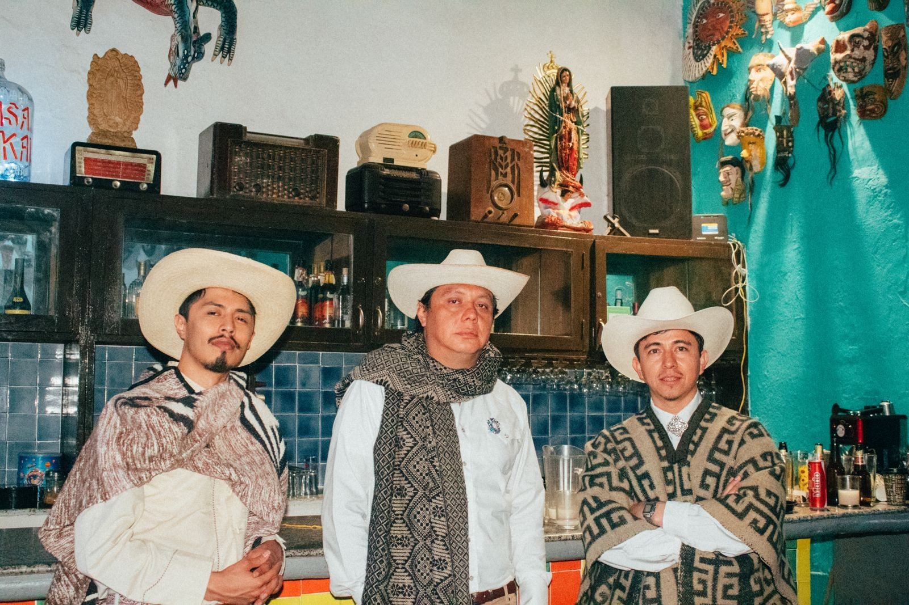
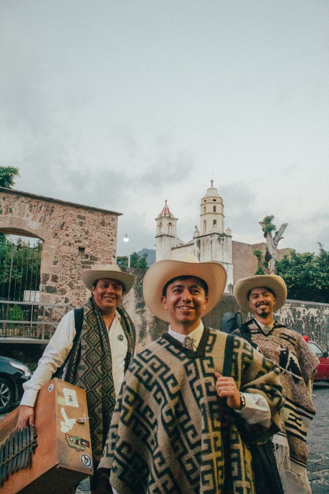
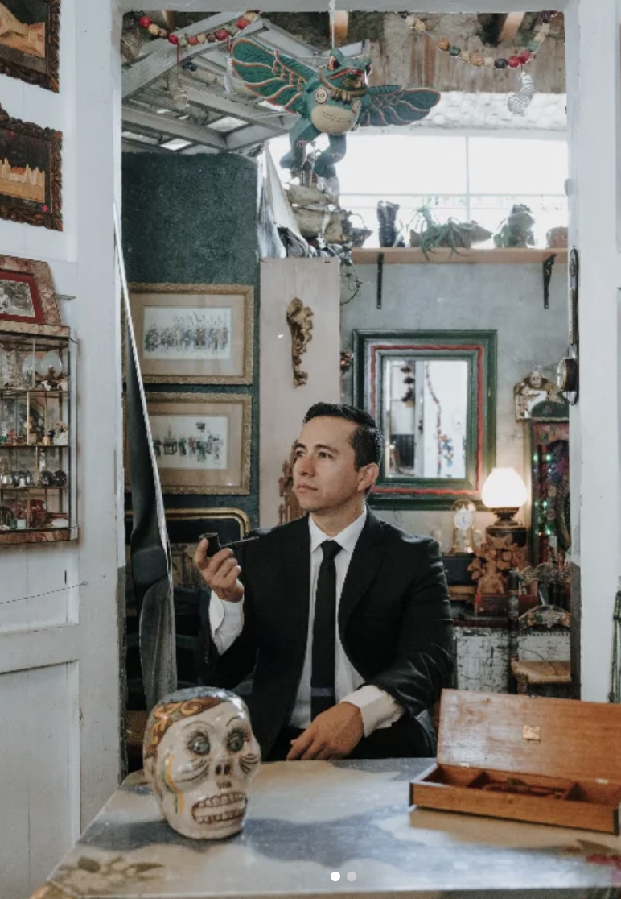
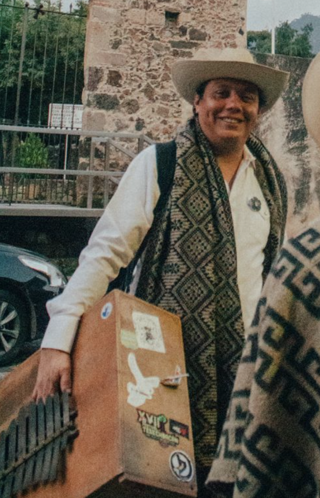
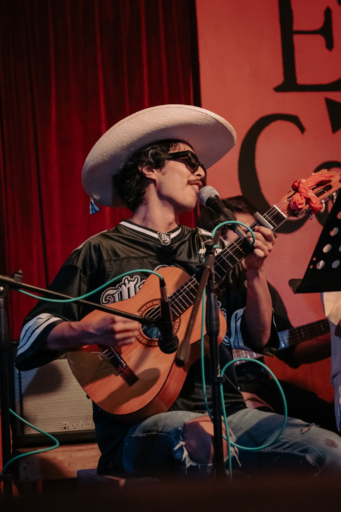

tres voces, un mismo sur
Música campirana del sur de México — corridos, chilenas y sones interpretados con guitarras, tololoche y marimbol.
Sobre el proyecto
Los Tres Amigos interpreta música tradicional del sur de México en formato campirano y acústico: corrido suriano, corrido costeño, chilena, son morelense, son tixtleco, son de artesa, columbia y algunas cumbias — siempre acompañadas de versos recitados, en su mayoría originarios de la Costa Chica y de Veracruz.
El formato habitual del trío es a dos voces, con dos guitarras y el acompañamiento del tololoche o el marimbol. En ocasiones especiales, la agrupación se amplía con vientos de madera y metal —saxofón y clarinete— así como cuerda frotada, con el violín interpretado al estilo calentano.
Aunque el proyecto es de formación reciente, sus integrantes llevan ya un largo recorrido trabajando juntos y por separado, tanto dentro del mismo universo de la música tradicional del sur de México como en otros géneros y proyectos paralelos.
"Tres voces que sostienen la memoria del sur."



Repertorio & instrumentación
Voz principal de la melodía, punteada y cantora.
Base armónica del trío, a dos voces.
Rasgueo que marca el pulso campirano.
Grave y percusivo — el bajo tradicional del sur.
Alterna con el tololoche según la ocasión.
Vientos que se suman en presentaciones especiales.
Cuerda frotada al estilo de Tierra Caliente.
Instrumentación propia de las tradiciones musicales del sur del país, siempre acompañada de versos recitados originarios en su mayoría de la Costa Chica, y algunos de Veracruz.
Integrantes
Integrantes oficiales del proyecto. En algunas presentaciones se suman músicos de refuerzo según la ocasión.

Voz (tenor)
Originario de San José de Pinos Guanajuato, Guanajuato. Comienza su formación artística y vocal en el Conservatorio de las Rosas, Morelia Michoacán, y es licenciado en Filosofía por el Instituto Cultural Leones en León Guanajuato. Posteriormente se incorpora al estudio integral de la licenciatura en música con especialidad en canto en el Centro Morelense de las Artes en Cuernavaca Morelos.
Se ha desempeñado como cantante solista en diferentes foros, tanto en el ámbito clásico como en los géneros cantables de tradición mexicana y lo contemporáneo, participando con programas de concierto en festivales y homenajes de la mano de las artes plásticas, presentándose en diferentes teatros, salas de concierto y museos.
Acreedor al premio Fischer-Diskau 2023, otorgado por la Universidad Panamericana en la Ciudad de México, a mejor intérprete de repertorio alemán.

Multiinstrumentista
Originario de la Ciudad de México, encontró en Veracruz el territorio donde forjó su identidad musical. La riqueza rítmica de su tradición, el pulso del son, la cadencia afroantillana y la profundidad de la música popular mexicana moldearon una visión artística que hoy se distingue por su versatilidad, sensibilidad y solidez interpretativa.
Multiinstrumentista de amplia trayectoria, ha transitado con naturalidad por géneros como el bolero, el son cubano, la cumbia, el jazz y diversas expresiones de la música tradicional latinoamericana, comprendiendo cada una como un lenguaje con identidad propia.
Su carrera lo ha llevado a compartir escenarios en distintos países como músico de compañías de ballet folclórico mexicano. Entre los momentos más significativos de su trayectoria destaca haber compartido escenario con el maestro Tino Contreras, figura imprescindible del jazz mexicano. Actualmente forma parte de Los Tres Amigos, proyecto dedicado a preservar y proyectar la música tradicional mexicana con una propuesta que honra sus raíces y dialoga con la excelencia interpretativa contemporánea.

Multiinstrumentista y director musical
Con más de 14 años de trayectoria, es un productor y músico multifacético. Estudió producción musical con Diego Cevallos ("Métrika") en El Bedroom, Ciudad de México (2016-2018), y cine en el Centro Indie de Estudios Cinematográficos en Xochimilco, Ciudad de México (2019-2021).
Esta formación le permite conceptualizar y dirigir proyectos con una visión artística integral, fusionando el lenguaje cinematográfico con la composición musical y la actuación. Como director musical de Gala Sureña, se dedica a revitalizar y homenajear la música tradicional del sur de México.
Su formación musical ha sido guiada por maestros como Enrique Barona —sones de tarima, jarocho y música peruana, desde los 8 años—, Amauri Suárez —guitarrista de música afroperuana basado en Lima, Perú— y Ehekatl Arizmendi —maestro de tradición chilenera y corridista de Acapulco—. Cursó además un propedéutico de tres años en la carrera de Música en la Universidad De La Salle Cuernavaca, tras el cual decidió dedicarse de lleno a la producción y a la música tradicional.
Su carrera incluye colaboraciones con artistas como las Hermanas García y Los Macorinos, además de haber abierto conciertos para la Orquesta Pasatono. También fue director musical de La Dolorosa de Robin Reza durante un año, banda para la que además produjo los sencillos "No volveré" y "Piensa en mí" con Kenny de Kenny y los Eléctricos. Como multiinstrumentista, destaca en la guitarra, bajo quinto, vihuela, charango, cuatro venezolano, mandolina y otros instrumentos de cuerda pulsada.
Trayectoria
20 de diciembre, 2025
Cumbias vs. Chilenas Vol. 2 — Parque Escultórico Dilao, Tepoztlán, Morelos
30 de abril, 2026
Ombú, Tepoztlán, Morelos
Sábado 15 de agosto, 2026 · 19:00 hrs
Papillon Música, Cuernavaca, Morelos
Adquirir entradas →Multimedia